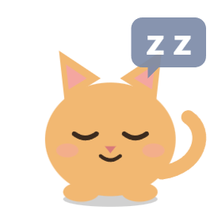
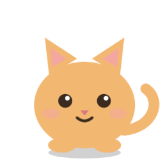
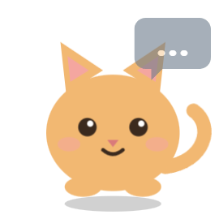
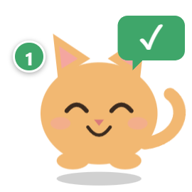
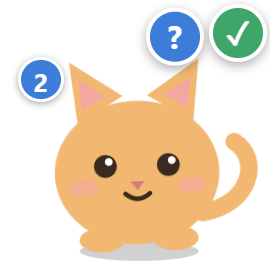
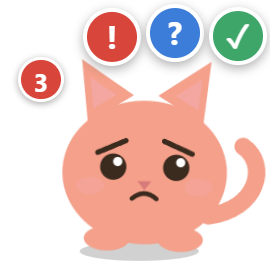
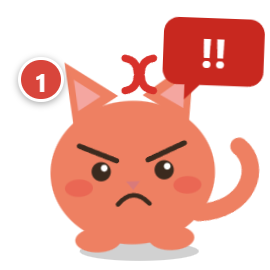
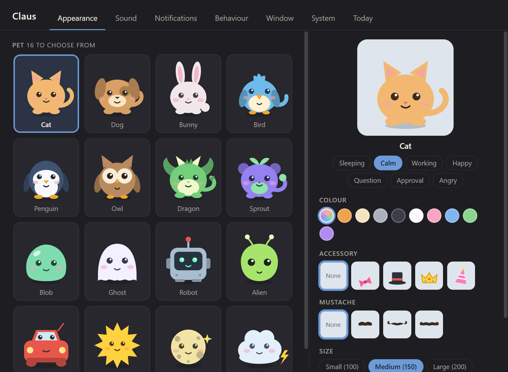

Claus is a small desktop pet for Windows. It shows when any Claude chat has finished, asked a question or needs your approval. Click it and you land in that chat.
Free and open source. Windows 10 and 11. Everything stays on your computer.







Claus listens to Claude Code on your own machine. There is no server, no sign-in and nothing to configure to get started.
Run the installer. It lives in the tray and appears on your desktop. No admin rights needed.
On first start Claus asks once before adding its small local hooks to Claude Code. A backup is kept, and your own hooks are never touched.
Start a chat and do something else. The pet reacts the moment Claude needs you. Click it to open the list.
Click the pet to see all your chats, grouped by project and sorted so the one that needs you is on top. Click a chat and Claude Desktop opens it.
/ to filter, right-click a row for more actions.The pet always shows the most urgent thing. When several things are waiting at once you get one chip for each kind, with a count.
A chat is busy. Nothing to do yet.
Claude is done and the result is ready for you.
Claude asked you something and waits for the answer.
A tool needs your permission before it can go on.
If a question or approval has been waiting longer than you allow (2 minutes by default), the pet turns angry: red face, shaking, a chime. Answer the chat and it calms down. Or set the patience to "never".
Three chats finish within a minute and confetti bursts over the pet. A small counter in the list tells you how many finished today.
Sixteen pets, ten colours, hats and mustaches. Every pet has art for every mood. Changes apply to the real pet straight away.

Four sound packs with a different tune for each kind of alert, volume control and quiet hours.
Optional Windows toasts, snooze, repeat reminders and auto-hide. No alert for a chat you are already looking at.
From 100 to 250 pixels, and see-through when you want it out of the way.
Snap to edges or corners, follow the window you work in across screens, stay above fullscreen video.
While nothing needs you, clicks pass through the pet. Hold Ctrl to grab it.
Hide the pet when Claude is not running and start it with Windows.
A notification pet has no business knowing what you write. So it does not.
The receiver listens on 127.0.0.1, refuses browser requests and always answers immediately, so it can never block or change Claude.
Only the session id, the event name, the tool name and the project folder are kept. Prompts and tool inputs are dropped before anything is saved or logged.
The only thing that leaves your computer is the update check on the installed version: one request to GitHub for the latest release.
All of it is plain JavaScript you can read. The hooks it adds are listed in the first-run dialog before you agree.
Download the installer from the latest release. The installed version can start with Windows and update itself.
Claus-Setup installs per user (no admin), adds a Start menu entry and an uninstaller, and can start with Windows and update itself. The portable exe is one file that installs nothing and never checks for updates.
The installer is not code-signed yet, so SmartScreen warns the first time. Choose More info, then Run anyway. The source is public and the release is built from it.
It adds eight small local hooks (plain HTTP to 127.0.0.1) to ~/.claude/settings.json. A backup is kept as settings.json.pet-bak, your existing hooks are not touched, and you can remove ours from the System tab at any time. Chats that were already open need a restart to pick the hooks up.
Yes for notifications. Chats started outside Claude Desktop cannot be opened by the pet, but it brings forward the window they run in.
git clone https://github.com/Squizzoo/Claus.git cd Claus npm install npm start node scripts/hooks.js install --apply
Needs Node.js and npm. npm test runs the tests.